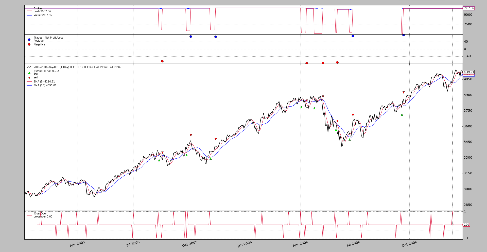
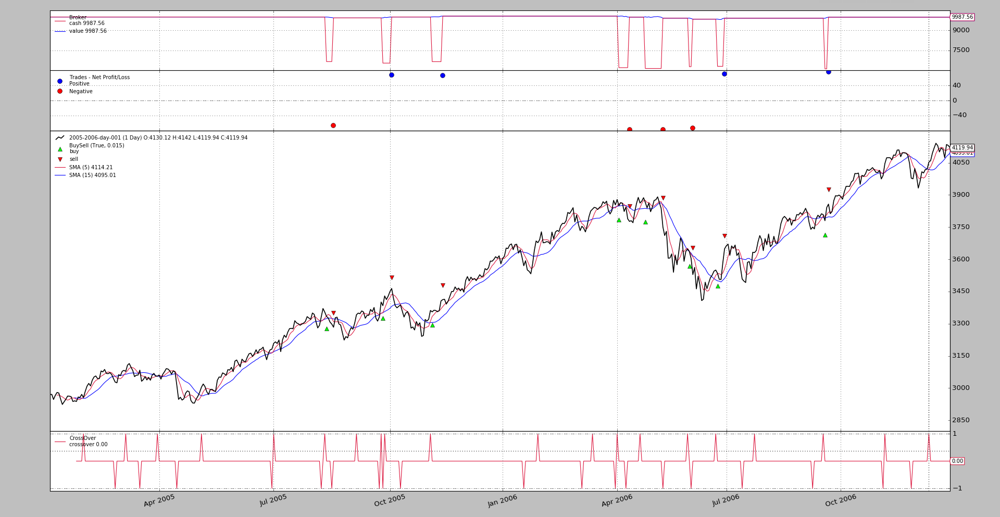

Release 1.9.37.116 adds bracket orders giving a very broad spectrum of
orders which are supported by the backtesting broker (Market, Limit,
Close, Stop, StopLimit, StopTrail, StopTrailLimit, OCO)
Note
This is implemented for backtesting and for the Interactivers Brokers store
A bracket order isn’s a single order but it is actually made up of 3
orders. Let’s consider the long side
- A main side
buyorder, usually set to be aLimitorStopLimitorder- A low side
sellorder, usually set to be aStoporder to limit losses- A high side
sellorder, usually set to be aLimitorder to take profit
With corresponding sell and 2 x buy orders for the short side.
The low/high side orders do actually create a bracket around the main side order.
To put some logic into it, the following rules apply:
- The 3 orders are submitted together to avoid having any of them triggered independently
- The low/high side orders are marked as children of the main side
- The children are not active until the main side is executed
- The cancellation of the main side cancels both the low and high side
- The execution of the main side activates both the low and high side
- Upon being active
- The execution or cancellation of any of low/high side orders automatically cancels the other
There are two possibilities to create the bracket set of orders
- Single issuing of the 3 orders
- Manual issuing of the 3 orders
backtrader offers two new methods in the Strategy to control bracket
orders.
buy_bracketandsell_bracket
Note
Signature and info below or in the Strategy reference section.
With a single statement a complete set of 3 orders. An example:
brackets = self.buy_bracket(limitprice=14.00, price=13.50, stopprice=13.00)
Notice how stopprice and limitprice wrap the main price
This should be enough. The actual target data would be data0 and the
size would be automatically determined by the default sizer. Of course both
and many other parameters can be specified to have a fine control of the
execution.
The return value is:
- A
listcontaining the 3 orders in this order:[main, stop, limit]
Because when issuing a sell_bracket order, the low and high sides would be
turned aound, the parameters are named following convention stop and limit
stopis meant to stop the losses (low side in a long operation, and high side in a short operation)limitis meant to take the profit (high side in a long operation and low side in a short operation)
This involves the generation of the 3 orders and playing around with the
transmit and parent arguments. The rules:
- The main side order must be created 1st and have
transmit=False- The low/high side orders must have
parent=main_side_order- The 1st low/high side order to be created must have
transmit=False- The last order to be created (either the low or high side) sets
transmit=True
A practical example doing what the single command from above did:
mainside = self.buy(price=13.50, exectype=bt.Order.Limit, transmit=False)
lowside = self.sell(price=13.00, size=mainsize.size, exectype=bt.Order.Stop,
transmit=False, parent=mainside)
highside = self.sell(price=14.00, size=mainsize.size, exectype=bt.Order.Limit,
transmit=True, parent=mainside)
Where there is a lot more to do:
Keep track of the
mainsideorder to indicate it is the parent of the othersControl
transmitto make sure only the last order triggers the joint transmissionSpecify the execution types
Specify the
sizefor the low and high sideBecause the
sizeMUST be the same. If the parameter were not specified manually and the end user had introduced a sizer, the sizer could actually indicate a different value for the orders. That’s why it has to be manually added to the calls after it has been set for themainsideorder.
Running the sample from below produces this output (capped for brevity)
$ ./bracket.py --plot
2005-01-28: Oref 1 / Buy at 2941.11055
2005-01-28: Oref 2 / Sell Stop at 2881.99275
2005-01-28: Oref 3 / Sell Limit at 3000.22835
2005-01-31: Order ref: 1 / Type Buy / Status Submitted
2005-01-31: Order ref: 2 / Type Sell / Status Submitted
2005-01-31: Order ref: 3 / Type Sell / Status Submitted
2005-01-31: Order ref: 1 / Type Buy / Status Accepted
2005-01-31: Order ref: 2 / Type Sell / Status Accepted
2005-01-31: Order ref: 3 / Type Sell / Status Accepted
2005-02-01: Order ref: 1 / Type Buy / Status Expired
2005-02-01: Order ref: 2 / Type Sell / Status Canceled
2005-02-01: Order ref: 3 / Type Sell / Status Canceled
...
2005-08-11: Oref 16 / Buy at 3337.3892
2005-08-11: Oref 17 / Sell Stop at 3270.306
2005-08-11: Oref 18 / Sell Limit at 3404.4724
2005-08-12: Order ref: 16 / Type Buy / Status Submitted
2005-08-12: Order ref: 17 / Type Sell / Status Submitted
2005-08-12: Order ref: 18 / Type Sell / Status Submitted
2005-08-12: Order ref: 16 / Type Buy / Status Accepted
2005-08-12: Order ref: 17 / Type Sell / Status Accepted
2005-08-12: Order ref: 18 / Type Sell / Status Accepted
2005-08-12: Order ref: 16 / Type Buy / Status Completed
2005-08-18: Order ref: 17 / Type Sell / Status Completed
2005-08-18: Order ref: 18 / Type Sell / Status Canceled
...
2005-09-26: Oref 22 / Buy at 3383.92535
2005-09-26: Oref 23 / Sell Stop at 3315.90675
2005-09-26: Oref 24 / Sell Limit at 3451.94395
2005-09-27: Order ref: 22 / Type Buy / Status Submitted
2005-09-27: Order ref: 23 / Type Sell / Status Submitted
2005-09-27: Order ref: 24 / Type Sell / Status Submitted
2005-09-27: Order ref: 22 / Type Buy / Status Accepted
2005-09-27: Order ref: 23 / Type Sell / Status Accepted
2005-09-27: Order ref: 24 / Type Sell / Status Accepted
2005-09-27: Order ref: 22 / Type Buy / Status Completed
2005-10-04: Order ref: 24 / Type Sell / Status Completed
2005-10-04: Order ref: 23 / Type Sell / Status Canceled
...
Where 3 different outcomes are shown:
In the 1st case the main side order expired and this automatically cancelled the other two
In the 2nd case the main side order was completed and the low (stop in the buy case) was executed limiting losses
In the 3rd case the main side order was completed and the high side (limit) was executed
This can be noticed because the Completed ids are
22and24and the high side order is being issued last, which means the non-executed low side order has id 23.
Visually
It can be immediately seen that the losing trades align around the same value and winning trades too, which is the purpose of the backeting. Controlling both sides.
The sample as run issues the 3 orders manually, but it can be told to use
buy_bracket. Let’s see the output:
$ ./bracket.py --strat usebracket=True
With the same result
See the new buy_bracket and sell_bracket methods
def buy_bracket(self, data=None, size=None, price=None, plimit=None,
exectype=bt.Order.Limit, valid=None, tradeid=0,
trailamount=None, trailpercent=None, oargs={},
stopprice=None, stopexec=bt.Order.Stop, stopargs={},
limitprice=None, limitexec=bt.Order.Limit, limitargs={},
**kwargs):
'''
Create a bracket order group (low side - buy order - high side). The
default behavior is as follows:
- Issue a **buy** order with execution ``Limit`
- Issue a *low side* bracket **sell** order with execution ``Stop``
- Issue a *high side* bracket **sell** order with execution
``Limit``.
See below for the different parameters
- ``data`` (default: ``None``)
For which data the order has to be created. If ``None`` then the
first data in the system, ``self.datas[0] or self.data0`` (aka
``self.data``) will be used
- ``size`` (default: ``None``)
Size to use (positive) of units of data to use for the order.
If ``None`` the ``sizer`` instance retrieved via ``getsizer`` will
be used to determine the size.
**Note**: The same size is applied to all 3 orders of the bracket
- ``price`` (default: ``None``)
Price to use (live brokers may place restrictions on the actual
format if it does not comply to minimum tick size requirements)
``None`` is valid for ``Market`` and ``Close`` orders (the market
determines the price)
For ``Limit``, ``Stop`` and ``StopLimit`` orders this value
determines the trigger point (in the case of ``Limit`` the trigger
is obviously at which price the order should be matched)
- ``plimit`` (default: ``None``)
Only applicable to ``StopLimit`` orders. This is the price at which
to set the implicit *Limit* order, once the *Stop* has been
triggered (for which ``price`` has been used)
- ``trailamount`` (default: ``None``)
If the order type is StopTrail or StopTrailLimit, this is an
absolute amount which determines the distance to the price (below
for a Sell order and above for a buy order) to keep the trailing
stop
- ``trailpercent`` (default: ``None``)
If the order type is StopTrail or StopTrailLimit, this is a
percentage amount which determines the distance to the price (below
for a Sell order and above for a buy order) to keep the trailing
stop (if ``trailamount`` is also specified it will be used)
- ``exectype`` (default: ``bt.Order.Limit``)
Possible values: (see the documentation for the method ``buy``
- ``valid`` (default: ``None``)
Possible values: (see the documentation for the method ``buy``
- ``tradeid`` (default: ``0``)
Possible values: (see the documentation for the method ``buy``
- ``oargs`` (default: ``{}``)
Specific keyword arguments (in a ``dict``) to pass to the main side
order. Arguments from the default ``**kwargs`` will be applied on
top of this.
- ``**kwargs``: additional broker implementations may support extra
parameters. ``backtrader`` will pass the *kwargs* down to the
created order objects
Possible values: (see the documentation for the method ``buy``
**Note**: this ``kwargs`` will be applied to the 3 orders of a
bracket. See below for specific keyword arguments for the low and
high side orders
- ``stopprice`` (default: ``None``)
Specific price for the *low side* stop order
- ``stopexec`` (default: ``bt.Order.Stop``)
Specific execution type for the *low side* order
- ``stopargs`` (default: ``{}``)
Specific keyword arguments (in a ``dict``) to pass to the low side
order. Arguments from the default ``**kwargs`` will be applied on
top of this.
- ``limitprice`` (default: ``None``)
Specific price for the *high side* stop order
- ``stopexec`` (default: ``bt.Order.Limit``)
Specific execution type for the *high side* order
- ``limitargs`` (default: ``{}``)
Specific keyword arguments (in a ``dict``) to pass to the high side
order. Arguments from the default ``**kwargs`` will be applied on
top of this.
Returns:
- A list containing the 3 bracket orders [order, stop side, limit
side]
'''
def sell_bracket(self, data=None,
size=None, price=None, plimit=None,
exectype=bt.Order.Limit, valid=None, tradeid=0,
trailamount=None, trailpercent=None,
oargs={},
stopprice=None, stopexec=bt.Order.Stop, stopargs={},
limitprice=None, limitexec=bt.Order.Limit, limitargs={},
**kwargs):
'''
Create a bracket order group (low side - buy order - high side). The
default behavior is as follows:
- Issue a **sell** order with execution ``Limit`
- Issue a *high side* bracket **buy** order with execution ``Stop``
- Issue a *low side* bracket **buy** order with execution ``Limit``.
See ``bracket_buy`` for the meaning of the parameters
Returns:
- A list containing the 3 bracket orders [order, stop side, limit
side]
'''
$ ./bracket.py --help
usage: bracket.py [-h] [--data0 DATA0] [--fromdate FROMDATE] [--todate TODATE]
[--cerebro kwargs] [--broker kwargs] [--sizer kwargs]
[--strat kwargs] [--plot [kwargs]]
Sample Skeleton
optional arguments:
-h, --help show this help message and exit
--data0 DATA0 Data to read in (default:
../../datas/2005-2006-day-001.txt)
--fromdate FROMDATE Date[time] in YYYY-MM-DD[THH:MM:SS] format (default: )
--todate TODATE Date[time] in YYYY-MM-DD[THH:MM:SS] format (default: )
--cerebro kwargs kwargs in key=value format (default: )
--broker kwargs kwargs in key=value format (default: )
--sizer kwargs kwargs in key=value format (default: )
--strat kwargs kwargs in key=value format (default: )
--plot [kwargs] kwargs in key=value format (default: )
from __future__ import (absolute_import, division, print_function,
unicode_literals)
import argparse
import datetime
import backtrader as bt
class St(bt.Strategy):
params = dict(
ma=bt.ind.SMA,
p1=5,
p2=15,
limit=0.005,
limdays=3,
limdays2=1000,
hold=10,
usebracket=False, # use order_target_size
switchp1p2=False, # switch prices of order1 and order2
)
def notify_order(self, order):
print('{}: Order ref: {} / Type {} / Status {}'.format(
self.data.datetime.date(0),
order.ref, 'Buy' * order.isbuy() or 'Sell',
order.getstatusname()))
if order.status == order.Completed:
self.holdstart = len(self)
if not order.alive() and order.ref in self.orefs:
self.orefs.remove(order.ref)
def __init__(self):
ma1, ma2 = self.p.ma(period=self.p.p1), self.p.ma(period=self.p.p2)
self.cross = bt.ind.CrossOver(ma1, ma2)
self.orefs = list()
if self.p.usebracket:
print('-' * 5, 'Using buy_bracket')
def next(self):
if self.orefs:
return # pending orders do nothing
if not self.position:
if self.cross > 0.0: # crossing up
close = self.data.close[0]
p1 = close * (1.0 - self.p.limit)
p2 = p1 - 0.02 * close
p3 = p1 + 0.02 * close
valid1 = datetime.timedelta(self.p.limdays)
valid2 = valid3 = datetime.timedelta(self.p.limdays2)
if self.p.switchp1p2:
p1, p2 = p2, p1
valid1, valid2 = valid2, valid1
if not self.p.usebracket:
o1 = self.buy(exectype=bt.Order.Limit,
price=p1,
valid=valid1,
transmit=False)
print('{}: Oref {} / Buy at {}'.format(
self.datetime.date(), o1.ref, p1))
o2 = self.sell(exectype=bt.Order.Stop,
price=p2,
valid=valid2,
parent=o1,
transmit=False)
print('{}: Oref {} / Sell Stop at {}'.format(
self.datetime.date(), o2.ref, p2))
o3 = self.sell(exectype=bt.Order.Limit,
price=p3,
valid=valid3,
parent=o1,
transmit=True)
print('{}: Oref {} / Sell Limit at {}'.format(
self.datetime.date(), o3.ref, p3))
self.orefs = [o1.ref, o2.ref, o3.ref]
else:
os = self.buy_bracket(
price=p1, valid=valid1,
stopprice=p2, stopargs=dict(valid=valid2),
limitprice=p3, limitargs=dict(valid=valid3),)
self.orefs = [o.ref for o in os]
else: # in the market
if (len(self) - self.holdstart) >= self.p.hold:
pass # do nothing in this case
def runstrat(args=None):
args = parse_args(args)
cerebro = bt.Cerebro()
# Data feed kwargs
kwargs = dict()
# Parse from/to-date
dtfmt, tmfmt = '%Y-%m-%d', 'T%H:%M:%S'
for a, d in ((getattr(args, x), x) for x in ['fromdate', 'todate']):
if a:
strpfmt = dtfmt + tmfmt * ('T' in a)
kwargs[d] = datetime.datetime.strptime(a, strpfmt)
# Data feed
data0 = bt.feeds.BacktraderCSVData(dataname=args.data0, **kwargs)
cerebro.adddata(data0)
# Broker
cerebro.broker = bt.brokers.BackBroker(**eval('dict(' + args.broker + ')'))
# Sizer
cerebro.addsizer(bt.sizers.FixedSize, **eval('dict(' + args.sizer + ')'))
# Strategy
cerebro.addstrategy(St, **eval('dict(' + args.strat + ')'))
# Execute
cerebro.run(**eval('dict(' + args.cerebro + ')'))
if args.plot: # Plot if requested to
cerebro.plot(**eval('dict(' + args.plot + ')'))
def parse_args(pargs=None):
parser = argparse.ArgumentParser(
formatter_class=argparse.ArgumentDefaultsHelpFormatter,
description=(
'Sample Skeleton'
)
)
parser.add_argument('--data0', default='../../datas/2005-2006-day-001.txt',
required=False, help='Data to read in')
# Defaults for dates
parser.add_argument('--fromdate', required=False, default='',
help='Date[time] in YYYY-MM-DD[THH:MM:SS] format')
parser.add_argument('--todate', required=False, default='',
help='Date[time] in YYYY-MM-DD[THH:MM:SS] format')
parser.add_argument('--cerebro', required=False, default='',
metavar='kwargs', help='kwargs in key=value format')
parser.add_argument('--broker', required=False, default='',
metavar='kwargs', help='kwargs in key=value format')
parser.add_argument('--sizer', required=False, default='',
metavar='kwargs', help='kwargs in key=value format')
parser.add_argument('--strat', required=False, default='',
metavar='kwargs', help='kwargs in key=value format')
parser.add_argument('--plot', required=False, default='',
nargs='?', const='{}',
metavar='kwargs', help='kwargs in key=value format')
return parser.parse_args(pargs)
if __name__ == '__main__':
runstrat()
{kind=link}
{kind=link}